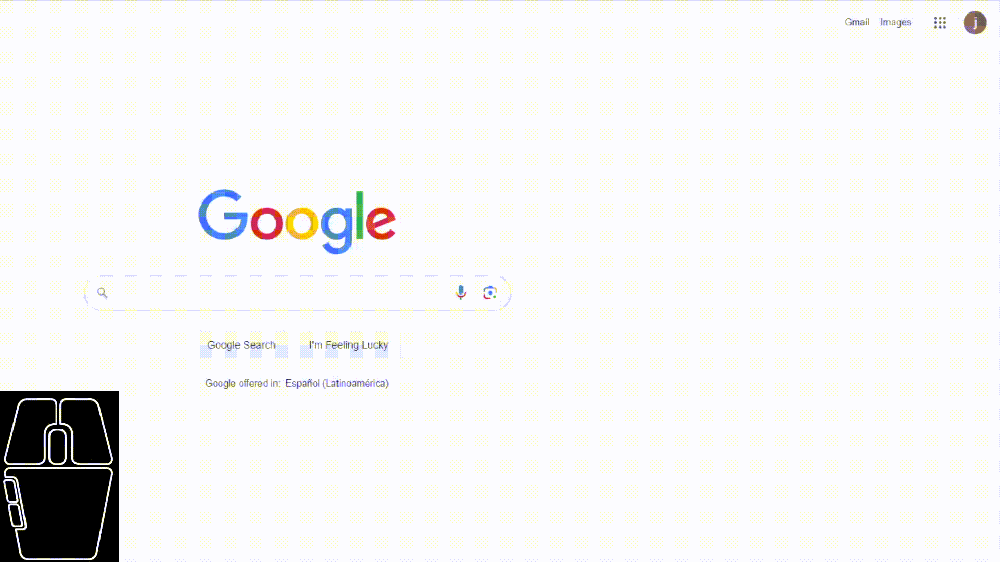

Tema 3Funciones
Para implementar funciones, utilizamos la palabra reservada function seguida de paréntesis en donde podemos tener variables de entrada (a estas variables se les conoce como parámetros o argumentos) para que modifiquen el comportamiento de la función. Después se abren llaves { }, las cuales contienen las líneas de código que se ejecutarán cuando se manda a llamar la función. Observa el siguiente ejemplo:
function miFuncion(a, b){
//Aquí va el código de
la
función
var resultado = a * b +
a;// Esta línea aplica
operaciones
sobre los parámetros recibidos y los guarda en una variable
llamada "resultado"
return resultado;
// Esta línea termina la ejecución de la
función y regresa el valor de la variable resultado
}
Analiza el código, ¿qué crees que realiza la función? Si llamamos a la función con los valores 2 y 3, ¿qué valor se asignará a la variable resultado?
Seguramente ya sabes la respuesta, pero solo para asegurar deberíamos mandar a llamar la función. "Mandar a llamar" una función es sinónimo de ejecutarla, y podemos hacer esto cuantas veces queramos. Es por esto que son muy útiles para reutilizar código. Esto se hace muy fácilmente, escribimos el nombre de la función junto con sus parámetros que, en el caso anterior, serían a y b. Si solo escribiéramos un parámetro en la llamada, JavaScript nos arrojaría un error de ejecución debido a que la función requiere 2.
Podemos tener funciones que no regresen ningún valor, así como funciones que no reciben parámetros. La función de ejemplo sí regresa un valor, por lo que es importante que lo guardemos para manipularlo. ¿Cómo? ¡Pues claro!, con una variable. Algo importante que debes tomar en cuenta es que las variables creadas dentro de una función sólo existen dentro de la función. Esto quiere decir que en el ejemplo anterior, no podemos usar la variable resultado fuera de la función.
var respuesta = miFuncion(2, 3);
console.log(respuesta);
De esta manera, estamos llamando a la función con los valores 2 y 3 y nos regresará un valor de 8.
console.log es una de las muchas funciones que ya vienen por defecto en JavaScript. Esta función no regresa ningún valor (y, por lo tanto, no asignamos su resultado a alguna variable), lo que hace es desplegar el parámetro en la consola. La consola es una interfaz con la que cuentan casi todos los navegadores, y nos permite depurar código.
Copia ambos ejemplos dentro de un <script> en algún archivo HTML y accede a tu consola. En Chrome, haz clic derecho y selecciona inspeccionar. Después accede a la consola, así:

Como puedes ver, podemos escribir JavaScript directamente en la consola, y también nos desplegará errores de ejecución.